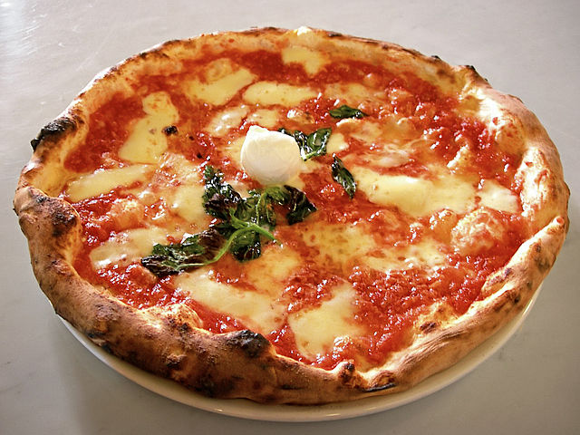
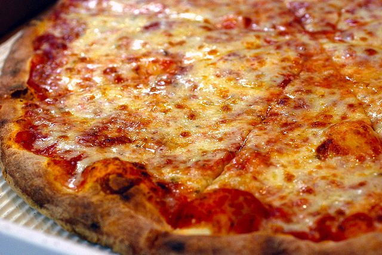
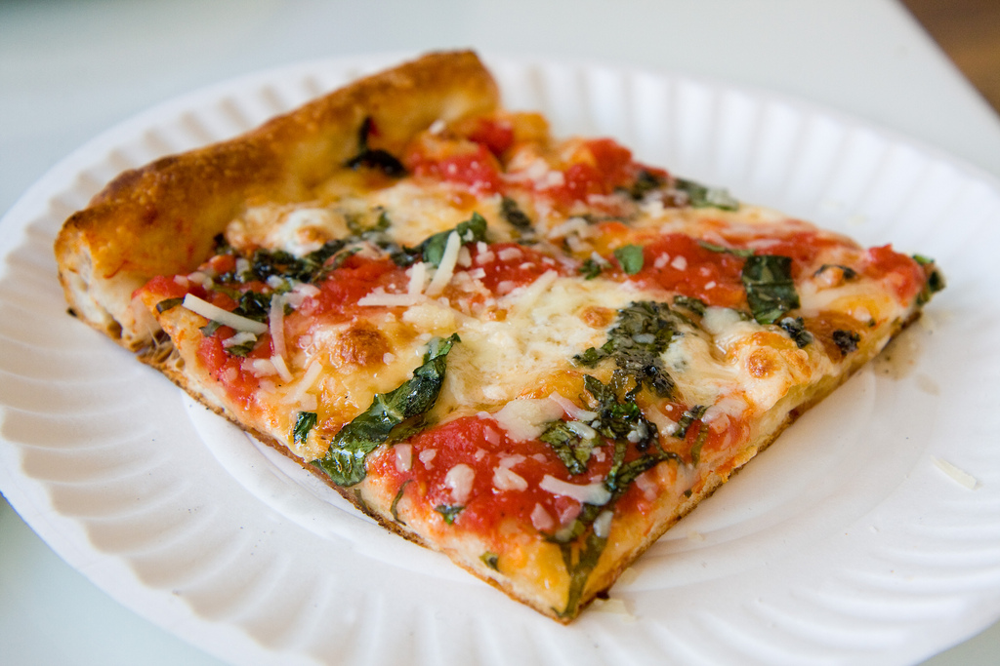
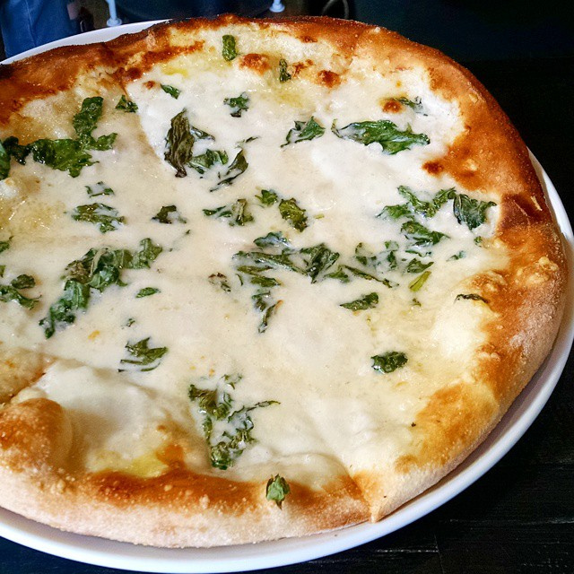

There are over 40 different types of pizza! Here are a few of my favorites.
Neapolitan

Cheese, tomato sauce and basil. Simplicity is delicious.
New York

The BEST kind of pizza. Some say it's in the water. And to end the debate once and for all, YES FOLD IT!
Grandma Pizza

A square slice (corner is the best) with tomato sauce on top of the cheese.
White (Bianca) Pizza

Garlic, ricotta, and mozzarella. Double the cheese, please!
Other types include: - Chicago - Salad - Bagel - Baked Ziti - Sicilian - Tarte Flambee - Maltese
- Hawaiian - Greek - World's Most Expensive - St. Louis - Tomato - Sushi Pizza - Mac and Cheese - Stuffed Crust
- Pizza Cone - Breakfast -